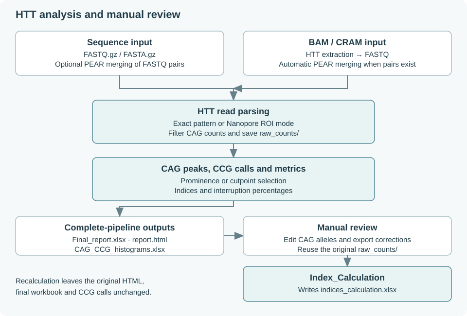

Operational modes
Complete Pipeline
strmie --mode Complete_Pipeline performs HTT analysis:
Resolve sequence inputs, optionally merge pairs; or extract HTT reads from BAM/CRAM and merge extracted pairs.
Parse reads using the exact matcher or the selected Nanopore parser, and retain CAG counts at or above
-m(default 7).Write matched, filtered per-read records to
raw_counts/.Call CAG peaks; calculate indices and interruption percentages.
Assign the most frequent CCG count near each called CAG peak. Retry CAG warning cases using the fallback peak caller.
Write the final Excel report, the interactive HTML report and a tidy CAG/CCG histogram workbook.
Parsing is parallel across samples by default. The default worker count is the minimum of the number of files, detected CPUs and 4. -j 1 selects sequential parsing. Extraction, merging and report generation are not governed by this sample-parsing worker setting.

Index Calculation
strmie --mode Index_Calculation reads corrected HTT CAG allele values from an Excel table and reuses the original run’s raw_counts/ directory. It writes indices_calculation.xlsx for the listed samples, including recalculated II/EI, Allele Ratio, interruption percentages and maximum observed CAG.
It does not rerun read parsing, reassign CCG alleles, regenerate report.html or overwrite Final_report.xlsx. The original HTML report therefore continues to display the original calls. Keep the recalculated workbook with the original results and record the correction choices.
Catalog-driven repeats
strmie-repeat is a separate entry point with no --mode parameter. It analyzes one catalog locus per invocation and writes a generic workbook, HTML report and per-sample count CSVs. It shares peak-calling and index functions with the HTT implementation, but uses separate parsing and report code.
It has no BAM/CRAM input, paired-end merging, sample parallelism or HTT manual-recalculation mode. See Other repeat loci.